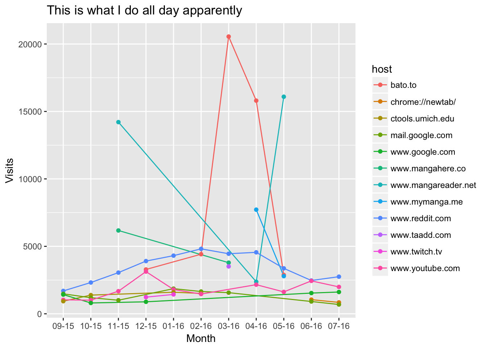

library(jsonlite)
library(data.table)
bhistory <- fromJSON("/Users/dsun/Google Drive/Takeout/Takeout 2/Chrome/BrowserHistory.json")
dt <- data.table(bhistory)
rm(bhistory)url.regex = "^https?://([^/]+)/(.*)$"
dt[, date_time := as.POSIXct(time_usec/1000000, tz = "EST", origin = "1970-01-01")]
dt[, month := as.numeric(format(date_time, "%m"))]
dt[, year := as.numeric(format(date_time, "%Y"))]
dt[, host := gsub(url.regex, "\\1", url)]We want a table with the top q most visited sites (determined by counting instances of the host name) for each year-month.
library(zoo)
q = 5L
line.graph.data = dt[, .(count=.N), by = c("year","month","host")][order(year,month,-count)][, lapply(.SD, function(x) head(x, n=q)), by = c("year","month")]
line.graph.data[, month_year := as.yearmon(paste(month, year, sep="-"), "%m-%Y")]
setorder(line.graph.data, month_year)head(line.graph.data)## year month host count month_year
## 1: 2015 9 www.reddit.com 1694 Sep 2015
## 2: 2015 9 mail.google.com 1479 Sep 2015
## 3: 2015 9 www.google.com 1423 Sep 2015
## 4: 2015 9 www.youtube.com 1035 Sep 2015
## 5: 2015 9 ctools.umich.edu 933 Sep 2015
## 6: 2015 10 www.reddit.com 2319 Oct 2015Used this website as a reference for producing this graph.
library(ggplot2)
ggplot(data=line.graph.data, aes(x=month_year, y=count, group=host, color=host, label=host)) +
geom_line() +
geom_point() +
theme(legend.position="bottom")
I don't have a Copyright © 2016 :( All rights reserved.